006 / Directional shadow mapping
結論と検証範囲
courtyardを変更しない別experimentとして、1枚のdirectional depth map、同じindexed meshのlit pass、共通upsampleを実装した。以下は実際のrelease native offscreen readbackとCPU wall timeで、llvmpipe software rasterizer / OpenGLの結果。hardware GPU性能・GPU timestamp・ブラウザー実行・Android実行の証拠ではない。
固定した2camera × 2lightで、defaultからmap resolution、rasterizer constant bias、rasterizer slope bias、manual nearest-comparison PCFを一つずつ変えた。shadow-offのcost control、reconstructed depth、visibility debugを加えた48条件。A/Aは全static条件と全temporal frameでbyte完全一致。同じsingle-pane Harnessを繰り返した検証であり、runtimeの独立A/B slot target同士を実行比較した結果ではない。
静止画はacne（表面の自己遮蔽模様）・contact detachment（接地点の隙間）・shadow edgeの階段状aliasingを別々に見る。大きなbiasは常に良い設定ではなく、acne低減と接地を失うことのtrade-offである。PCFは影境界を平均し、map resolution増加とは違う見え方になる。これは定性的な比較であり、正解画像に対する品質指標ではない。
固定条件・bounded OFAT
- Display/internal 512×512、100%、t=0、MSAAなし。depth mapのみ256/512/1024。default512、constant preset1、slope preset1、PCF3×3。
- Constant presets0/1/2 = DepthBiasState.constant 0/2/65536。Slope presets0/1/2 = slope_scale0/1/8。clamp0。receiver comparisonはreference=light depthで、receiver側のdepth/slope subtractionはしない。
- Depth32Floatのconstant biasはrasterizerのdepth-format依存unit。0/2/65536をnormalized depthの0/.0005/.012と読み替えない。Slopeはlight-view screen-space depth gradientにかかる。
- Direction toward light0 normalize([-0.6,1,0.5])、light1 normalize([-1,0.3,0.35])。ortho extent±8、light eye=direction×20、near0.1/far40。light0をhigh、light1をlowと呼ぶ。
- Camera0 oblique eye[8.2,6.8,10.5]、camera1 overhead eye[0.1,17,0.1]。target[0,0.6,0]、up[0,1,0]、45°vertical FOV、near0.1/far100、aspect1。
- Shadow-only geometry 1,297vertices / 1,976triangles。既存courtyardに3本のthin polesとsloped receiverを追加。元courtyard mesh builderは変更しない。
- On: 1indexed depth draw +1indexed color draw +1fullscreen upsample。Off: depth passをskip、1indexed color +1upsample。Reconstructed depth:1indexed depth +1fullscreen depth-debug（pixelごと16比較）+1upsample。Visibility:depth +indexed visibility +upsample。
- PCF1/3/5はそれぞれ1/9/25個のnearest comparison samplerの結果を明示的に平均。textureSampleCompareLevelのoffset先texel中心を明示し、filteringによる追加比較tapはない。範囲外tapはlit。
map resolutionを変えるとsampling密度だけでなく、per-map-pixel maxDepthSlopeが変わるためslope_scale1の実効normalized/world-space biasも変わる。固定しているのはAPI parameter値であり実効depth displacementではない。PCFの同じkernel幅もworld-space footprintが変わる。したがってresolution差を純粋なalias密度の効果だけに帰属しない。
静止画:一つずつ変更
Camera0 / light0
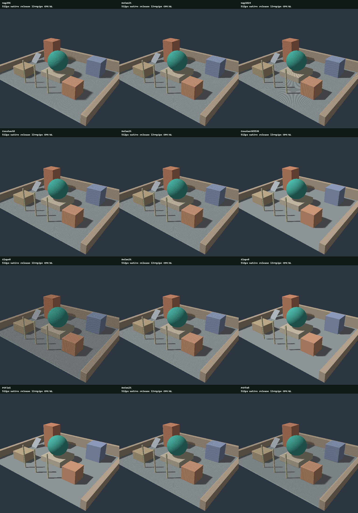
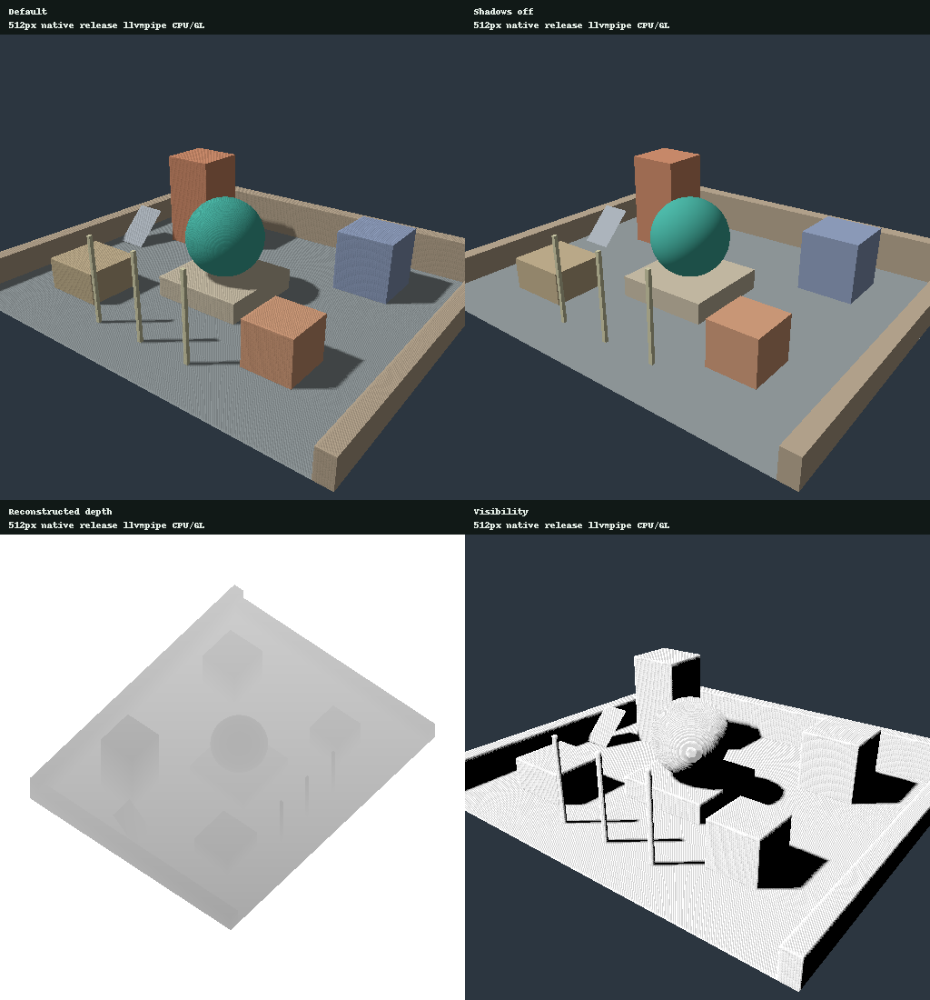
Camera0 / light1
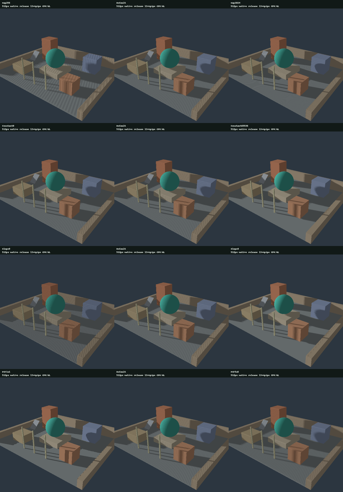
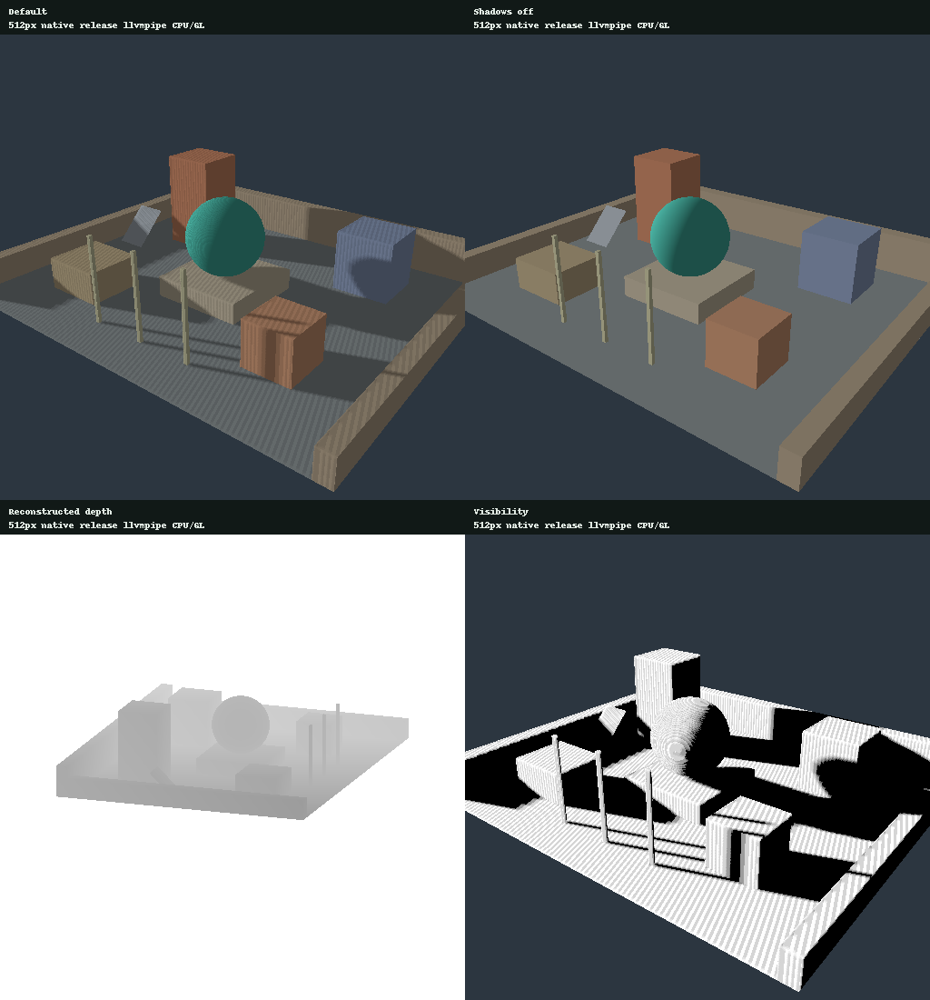
Camera1 / light0
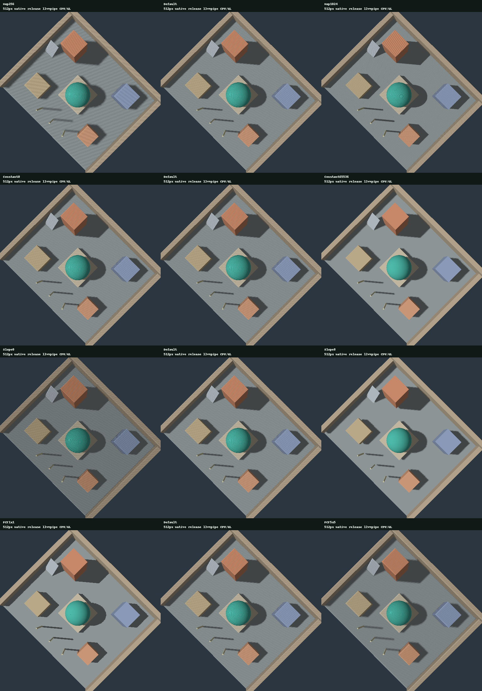
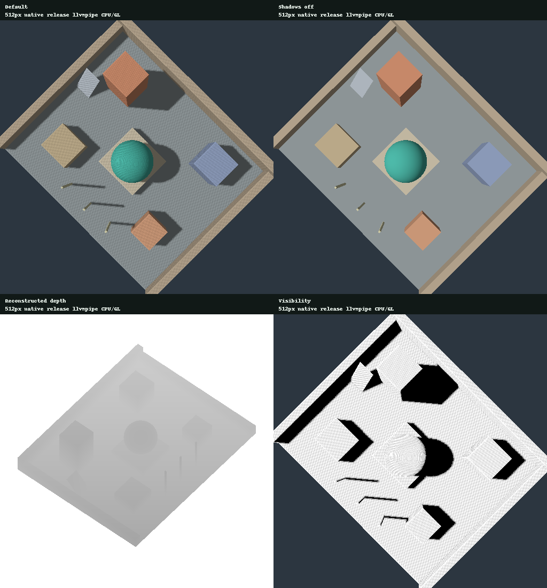
Camera1 / light1
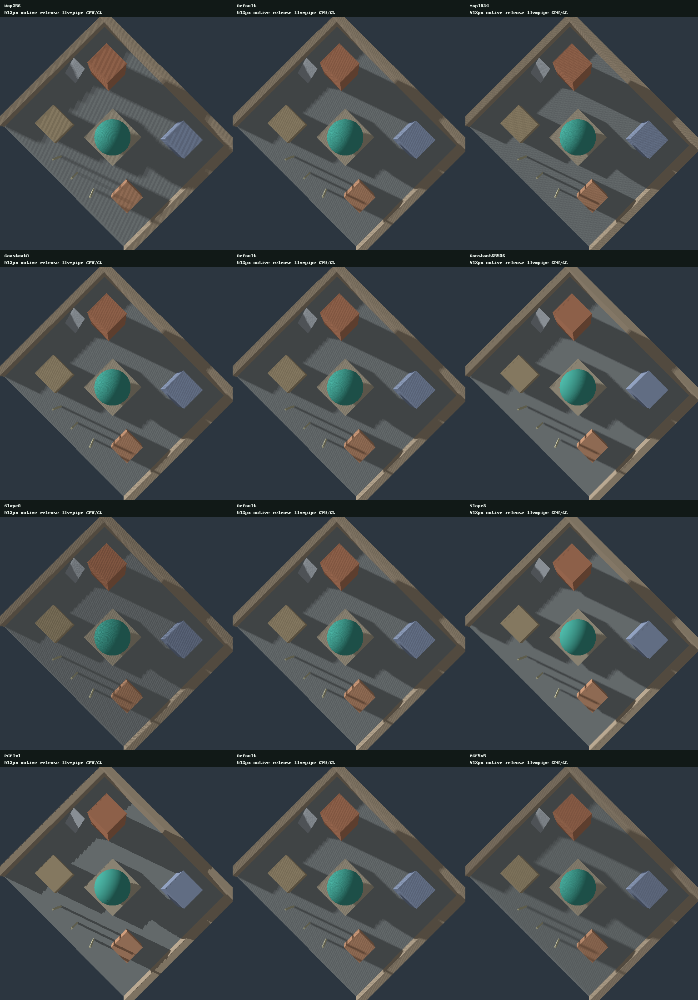
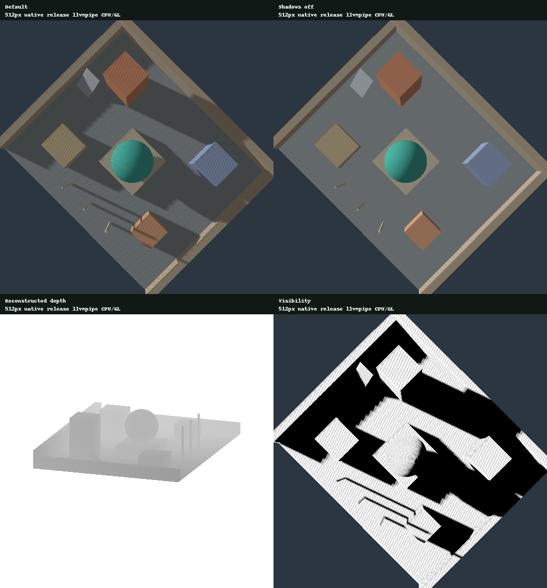
実画像からの観察と候補
default512/constant2/slope1/PCF3は両lightでacneが残る。high lightのfloor・box・sphereに密な縞があり、1024/PCF3ではfloor上の広いmoiréが目立つ。resolutionを上げただけで解決した結果ではない。
constant0→2の差は4camera/light条件で5–19 / 262,144pixelsだけ。違いはzeroではないが、この小幅なconstant bias変更は目立つ縞を解消しなかった。
constant65536/PCF3は広い自己遮蔽の縞を減らすが、thin-poleのcontact shadowを細く・弱くする。slope8/PCF3はさらにpoleの根元に数pixelの隙間が見え、sphereの接触影も大きく失われる。これを普遍的な改善設定として推奨しない。
bounded candidateは512/constant2/slope1/PCF1。今回の両lightではpoleの根元の接続を保ち、PCF3で強かった広い表面縞がかなり減る。ただしshadow edgeは硬く階段状で、滑らかな影を求める用途の完成設定ではない。UI defaultは比較基準として残し、この候補をproduction defaultとは呼ばない。
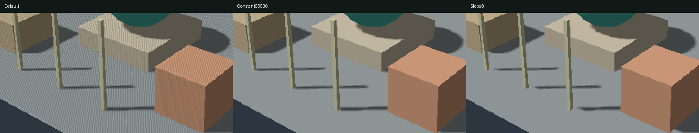
cropは元512×512の[85,250,355,390]をnearest2倍に拡大。左default、中央constant65536、右slope8。frameやgeometryは同じで、輪郭を描き直していない。
Depth debugは実際のbiased light depthを16回のnearest比較によるbinary searchで再構成しgray表示する。値は約1/65536精度の量子化近似で、厳密なfloat depth readではない。whiteはfar/no geometryで、距離metresではない。VisibilityはPCF比較結果。sRGB attachmentを通すためgray byteをlinear visibilityの数値そのものと解釈しない。lightが同じならdepth-debug画像はcamera0/1で完全一致した。
時間方向:固定camera pathの同時比較
world、light、object、map projectionは固定し、24frameでcamera eye.xだけ8.2→8.9へ等間隔に移動する。camera targetは固定。全条件に同じf32 matrixを使い、各frameのeye/target/column-major matrixを保存した。これはcameraに追従するshadow-map stabilizationのtestではない。
以下はlossless APNG、100ms/frameを生成時に指定したplaybackで、測定FPSではない。rendered24frameを0→23→22→1の46frame ping-pong順に再生し、loop端の急なcamera jumpを避ける。逆方向部分は保存frameの再生で追加renderではない。全rendered frame PNGも保存。量子化paletteや動画圧縮によるflickerは加えていない。
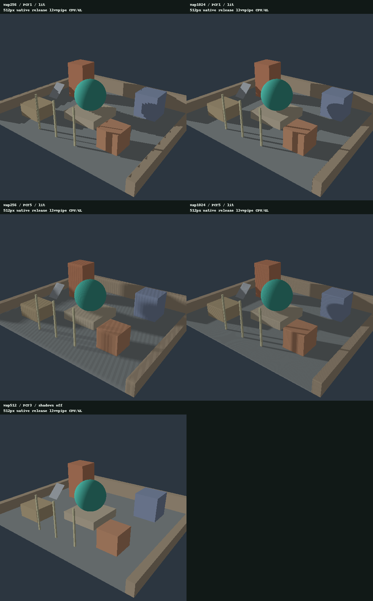
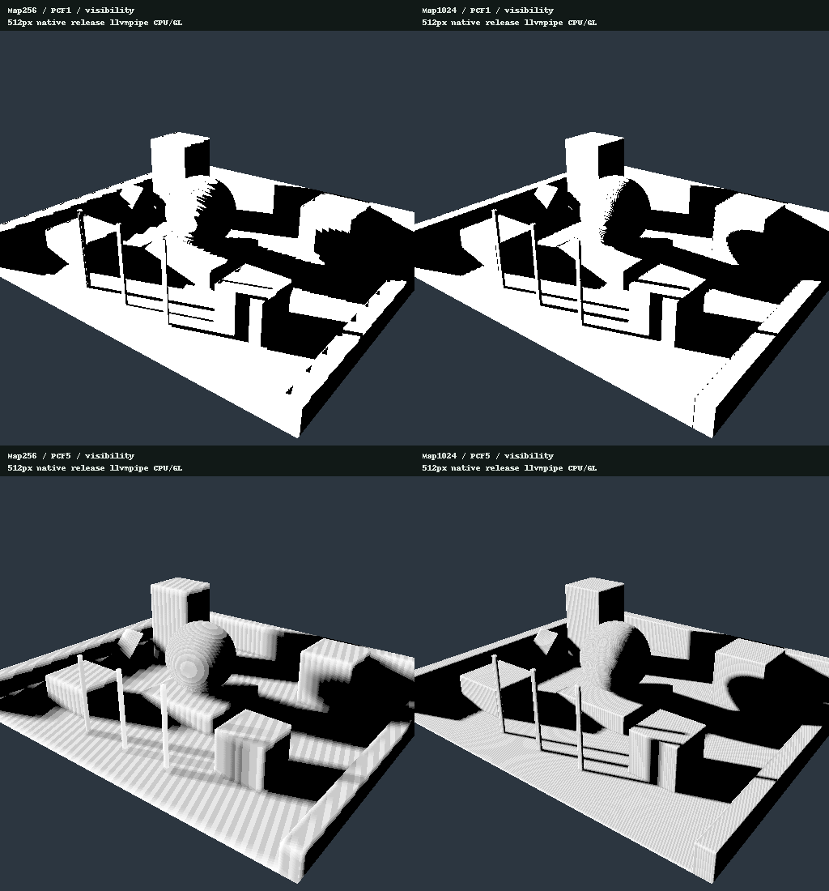
左上256/PCF1、右上1024/PCF1、左下256/PCF5、右下1024/PCF5。lit animationの3行目左はshadow-off。offでもcamera motionによるobject silhouette・surface coverageの変化は起きる。visibility animationはshadow比較だけを見やすくするが、receiver/objectの画面内移動も残る。
shadow edgeが不連続に移動したり細い影が消えるところをmatched frameで比較する。単純な連続frame RGB差は通常のcamera motionも数えるのでflicker scoreとして扱わない。本reportはtemporal sequenceを提示し、主観的な違いを見られる範囲に留める。acne/contact detachmentの静的比較と、motion時のedge aliasingは別の現象であり、一方の改善だけで他方を解決したとは主張しない。
保存frame0/7/15/23のvisibility cropでは、256/PCF1はpole影の長い斜辺の粗いstepが目立ち、1024/PCF1はstepが細かい。ただし1024でもscreen pixelのraster aliasは残る。256/PCF5は境界を広く平均する一方、細いpole影が白いreceiverへ薄く溶ける。1024/PCF5はその影のcontrastを比較的保つが、細かいacne/moiréが画面上で動く。filter拡大だけでtemporal artifactが消えたとは評価しない。
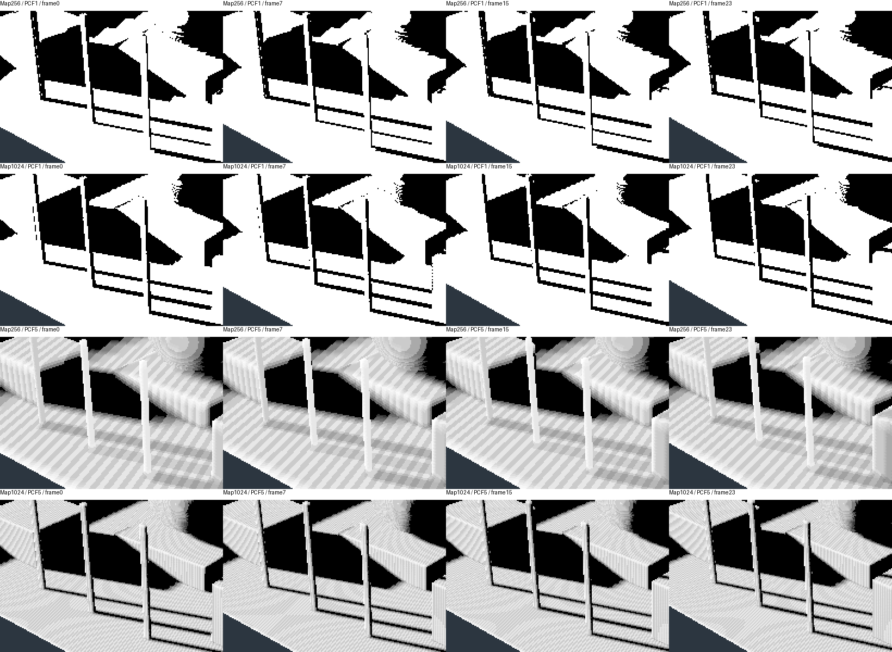
各行は256/PCF1、1024/PCF1、256/PCF5、1024/PCF5。各列はframe0/7/15/23。crop[70,235,275,375]をnearest2倍。off controlとfull imagesで通常のcamera motionを照合し、これらの変化を定量flicker scoreへ変換しない。
Native release wall time
各条件・各repeatで3warmup、10samples、3repeatsで1440samples。repeat0は全48条件forward、repeat1はreverse、repeat2は24条件rotation。完全なrandomizationや全順序の均衡ではなく、順序効果を減らす限定的なcounterbalancing。3repeatは同一process内のblockで、独立した3実験や信頼区間ではない。最終採用runは同時のbuild/report生成/test jobsを止めて取得したが、専用hardware benchmark環境とは主張しない。
下表は各条件30samplesをpoolした通常medianとnearest-rank p95（ms）。encodeはencoder作成・pass記録・finish。submitはqueue.submit呼出し。waitはそのsubmission完了までのdevice.poll。totalはこの3区間の和。9depth variants+main+debugのpipeline生成、resource allocation、uniform更新（runtimeではframeごとに発生）、image readback、asset準備、surface acquire/presentはtiming外。
Camera0 / light0 / ms
| Condition | Encode med/p95 | Submit med | Wait med | Total med/p95 |
|---|---|---|---|---|
| Default | 0.035/0.102 | 2.520 | 0.473 | 3.095/9.590 |
| Map256 | 0.042/0.110 | 2.557 | 0.488 | 3.172/5.686 |
| Map1024 | 0.052/0.105 | 3.062 | 0.518 | 3.679/6.694 |
| Constant0 | 0.039/0.087 | 2.579 | 0.502 | 3.169/5.222 |
| Constant65536 | 0.032/0.091 | 2.596 | 0.473 | 3.122/6.415 |
| Slope0 | 0.037/0.096 | 2.443 | 0.455 | 3.004/5.800 |
| Slope8 | 0.037/0.097 | 2.479 | 0.500 | 3.047/6.194 |
| PCF1x1 | 0.037/0.109 | 2.137 | 0.527 | 2.728/3.969 |
| PCF5x5 | 0.039/0.098 | 3.261 | 0.495 | 3.813/8.086 |
| Shadows off | 0.026/0.056 | 1.032 | 0.484 | 1.578/3.344 |
| Reconstructed depth | 0.030/0.038 | 1.938 | 0.440 | 2.398/2.737 |
| Visibility | 0.035/0.063 | 2.120 | 0.430 | 2.571/3.144 |
Camera0 / light1 / ms
| Condition | Encode med/p95 | Submit med | Wait med | Total med/p95 |
|---|---|---|---|---|
| Default | 0.041/0.098 | 2.539 | 0.463 | 2.962/8.290 |
| Map256 | 0.039/0.078 | 2.484 | 0.523 | 3.084/4.936 |
| Map1024 | 0.041/0.146 | 3.034 | 0.507 | 3.578/6.474 |
| Constant0 | 0.047/0.106 | 2.592 | 0.511 | 3.150/5.950 |
| Constant65536 | 0.035/0.062 | 2.436 | 0.496 | 2.925/3.882 |
| Slope0 | 0.037/0.059 | 2.522 | 0.471 | 3.083/5.740 |
| Slope8 | 0.045/0.145 | 2.701 | 0.501 | 3.224/7.043 |
| PCF1x1 | 0.038/0.053 | 2.163 | 0.505 | 2.701/3.877 |
| PCF5x5 | 0.036/0.067 | 3.289 | 0.522 | 3.916/5.039 |
| Shadows off | 0.027/0.041 | 1.246 | 0.499 | 1.790/2.534 |
| Reconstructed depth | 0.032/0.046 | 1.885 | 0.490 | 2.446/3.508 |
| Visibility | 0.035/0.051 | 2.540 | 0.531 | 3.095/3.991 |
Camera1 / light0 / ms
| Condition | Encode med/p95 | Submit med | Wait med | Total med/p95 |
|---|---|---|---|---|
| Default | 0.041/0.066 | 2.393 | 0.469 | 2.967/5.463 |
| Map256 | 0.039/0.064 | 2.430 | 0.434 | 2.968/4.705 |
| Map1024 | 0.056/0.112 | 3.608 | 0.489 | 4.138/8.225 |
| Constant0 | 0.042/0.098 | 2.558 | 0.479 | 3.235/6.976 |
| Constant65536 | 0.047/0.123 | 3.073 | 0.545 | 3.806/6.926 |
| Slope0 | 0.036/0.058 | 2.461 | 0.463 | 2.955/3.933 |
| Slope8 | 0.035/0.095 | 2.406 | 0.453 | 2.996/5.481 |
| PCF1x1 | 0.037/0.073 | 1.817 | 0.430 | 2.302/3.570 |
| PCF5x5 | 0.035/0.047 | 3.054 | 0.449 | 3.527/5.357 |
| Shadows off | 0.029/0.085 | 1.208 | 0.493 | 1.806/3.586 |
| Reconstructed depth | 0.034/0.086 | 1.866 | 0.433 | 2.298/3.678 |
| Visibility | 0.037/0.065 | 2.480 | 0.464 | 2.984/4.034 |
Camera1 / light1 / ms
| Condition | Encode med/p95 | Submit med | Wait med | Total med/p95 |
|---|---|---|---|---|
| Default | 0.054/0.094 | 2.905 | 0.518 | 3.661/5.827 |
| Map256 | 0.046/0.078 | 3.144 | 0.531 | 3.817/6.781 |
| Map1024 | 0.040/0.084 | 3.492 | 0.586 | 4.039/7.365 |
| Constant0 | 0.043/0.106 | 3.244 | 0.579 | 3.957/20.841 |
| Constant65536 | 0.037/0.088 | 2.927 | 0.550 | 3.765/13.172 |
| Slope0 | 0.039/0.099 | 2.685 | 0.493 | 3.192/6.065 |
| Slope8 | 0.046/0.103 | 2.754 | 0.499 | 3.383/8.890 |
| PCF1x1 | 0.047/0.089 | 2.393 | 0.508 | 2.884/7.311 |
| PCF5x5 | 0.053/0.091 | 3.952 | 0.522 | 4.534/8.284 |
| Shadows off | 0.028/0.053 | 1.446 | 0.532 | 2.038/3.748 |
| Reconstructed depth | 0.039/0.097 | 2.632 | 0.531 | 3.125/6.091 |
| Visibility | 0.039/0.088 | 2.650 | 0.508 | 3.253/6.197 |
9depth variants +main +debugのbatch作成API/validation wall timeは一度の観測で11.127ms。frame timingとは別のsetup costで、driverが後から行うcompile作業を完全に捕捉する保証はない。
llvmpipeでは描画自体がCPU上で走り、submit/waitにdriver実行が含まれ得る。encodeだけを全CPU負荷とは呼ばない。offはdepth drawとshadow sample loop両方を除くcontrolであり、差をdepth-map pass単体のcostと断定しない。software adapterでPCF/mapの時間が増減してもhardware GPUの順位・速度比に一般化しない。native1pane直列submitはWeb A/B2pane・rAF・非同期queue・presentationと条件が違う。
- 1440 raw samples
- 144 repeat summaries
- 48 pooled summaries
- Verification
- Fixed parameters and exact condition orders
Map解像度とinternal scaleの分離
scene internal targetを512→256→512へ切り替えても同じ512² shadow Mapを保持し、Light.options.resolutionは512のまま。戻したreconstructed-depth画像はbyte完全一致した。50%表示はupsampleとpixel samplingが異なるため100%画像との一致は要求しない。map memoryはDepth32Float論理texel storageで256²=262,144bytes、512²=1,048,576bytes、1024²=4,194,304bytes。driver overheadやcolor/depth targetsを含む総VRAMではない。native harnessは3サイズのmapを事前に確保して保持し、条件ごとのallocationをtimingへ含めない。
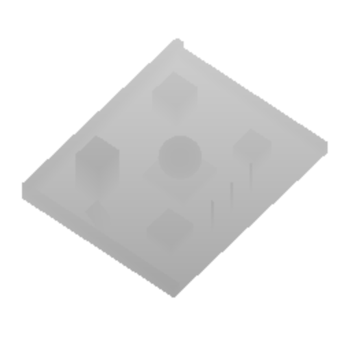
Backend上の実際の制限と検証
- Adapter:
AdapterInfo { name: "llvmpipe (LLVM 19.1.7, 256 bits)", vendor: 65541, device: 0, device_type: Cpu, device_pci_bus_id: "", driver: "", driver_info: "4.5 (Core Profile) Mesa 25.0.7-2+deb13u1", backend: Gl, subgroup_min_size: 4, subgroup_max_size: 128, transient_saves_memory: None, limit_bucket: None } - 初回native作成はGLSL backendのdepth textureLoad未対応で失敗した。続くnoncomparison textureSampleLevelもGLSLのsampler2DShadow signatureで失敗。最終実装はnearest comparison sampler +texel中心textureSampleCompareLevelで離散comparisonを明示し、depth debugのみ16比較のbinary searchで深度を再構成する。同じcore APIをruntime/test双方で使う。成功をVulkanやhardwareの結果に置き換えていない。
- Native assertions:static/temporal A/A byte一致、on/off差、両debug非empty、clear領域white、positive raster biasでreconstructed depthが単調増加、invalid WGSL拒否、wrong group ABI拒否、camera間reconstructed-depth一致、internal-scale round trip一致。
- Shader/pipeline拒否のtestはsurface上のlive reload操作やbrowser screenshot rollbackを実行した証拠ではない。WebGPU browser、hardware GPU、Android、GPU timestampは未検証。
Issue #7の実験基準に対する証拠
- Acne: 48条件のnative static readback、visibility表示、拡大cropでreferenceとconstant/slope/PCF変更を比較した。
- Floating/contact detachment: constant65536・slope8のthin-pole根元とsphere接触影を同じcamera/lightのcropで比較し、改善の代償を明示した。
- Flicker/temporal aliasing: light/world固定の24frame camera path、4resolution/filter組合せ、shadow-off control、全frame PNGとlossless APNGを保存した。通常のmotionとacneを分けて観察し、flicker解消や定量品質scoreは主張しない。
- 再現性/cost: fixed metadata、3repeat×10samples×48conditionsのCSV、warmup・順序・clock範囲、source/hashを保存した。
- 判断: bounded hard-shadow candidate512/constant2/slope1/PCF1と、PCF3/5のacne、高biasのcontact欠落という失敗条件を記した。
以上はIssue #7のnative実験範囲の証拠。browser/hardwareは別のIssue #1/#2の未検証範囲として分離し、この実験に新しいhardware要件を加えない。公開とIssue closeの判断は別途行う。
再現・出典
export CARGO_HOME=$PWD/../toolchains/cargo RUSTUP_HOME=$PWD/../toolchains/rustup PATH=$PWD/../toolchains/cargo/bin:$PATH
RENDERING_LAB_SHADOWS_OUT=$PWD/evidence/shadows-native cargo test --release -p rendering-core --test shadows_smoke -- --ignored --nocapture
python3 scripts/build-shadow-evidence.py --input evidence/shadows-native
python3 scripts/build-shadow-evidence.py --self-test
python3 scripts/build-shadow-evidence.py --checkbase commitはprivate PBRの4deccc8a3643a6115d7f62021fe7082b3730338e。commit treeの全175filesがreview済みPBR snapshotとbyte一致することを確認した。base runtime/core snapshot inventoryはそのうち本実験前のruntime/core subsetのhashを記録し、presentation/report hotfixはsubset対象外。最終shadow source commitは96e778e3f4eef04a142ea5db5610196feb98ef35。公開済みprivate commitの全498filesがreview済みsource manifestとbyte一致することを確認した。ここでの公開後metadata更新は、capture時のnative source snapshotや測定dataを変更しない。native testは実行binaryへ埋め込んだcore/shader/test sourceをraw evidenceに保存し、report builderは現在sourceとの一致を要求する。その他source・raw evidenceのhashはsource snapshotを参照。
builderは画像264枚+scale1枚+bias monotonicity2枚、CSV順序/欠落/重複/有限値/合計、24frameのpath、実行sourceを検証。--checkは一時領域へ再生成してbyte比較する。APNG・PNGのbyte再現には同一Pillow/zlib環境を使う。--self-testは実測inputの一時copyだけに不正値・欠落・順序変更を加えて拒否を確認し、元evidenceへ混ぜない。